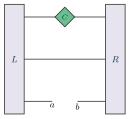

Examples / 16
Bond effective Hamiltonian

The bond (zero-site) effective Hamiltonian, applied to the center on a bond: H_eff C.
Factor the center off a site, AC = AL C, let AL join the left environment, and the center is C, on the bond. C carries no physical index, so nothing of the Hamiltonian sits here: the MPO's bond runs straight from L to R, which is the ‘-’ slot – a layer whose index passes through. One-site TDVP evolves C backwards in time with this, and VUMPS solves for its fixed point.
The slot is the same width as a site's. The center on a bond is a different shape (the small diamond) rather than a different slot.
The picture
Point at a line to see what it draws, or at the picture to see which line drew it.
\begin{tikzpicture} \tnstack[left=$L$, right=$R$]{K}{1}{ket, op, bra} \tnlayer{K}{ket}{centerbond/$C$} \tnlayer{K}{op}{-} \tnconnect{K} \tnput[below]{K-bra-left}{$a$} \tnput[below]{K-bra-right}{$b$}\end{tikzpicture}
The whole file
\documentclass[border=4pt]{standalone}\usepackage{amsmath,amssymb}\usepackage{tikz-tensors}\input{notation}\begin{document}\begin{tikzpicture} \tnstack[left=$L$, right=$R$]{K}{1}{ket, op, bra} \tnlayer{K}{ket}{centerbond/$C$} \tnlayer{K}{op}{-} \tnconnect{K} \tnput[below]{K-bra-left}{$a$} \tnput[below]{K-bra-right}{$b$}\end{tikzpicture}\end{document}